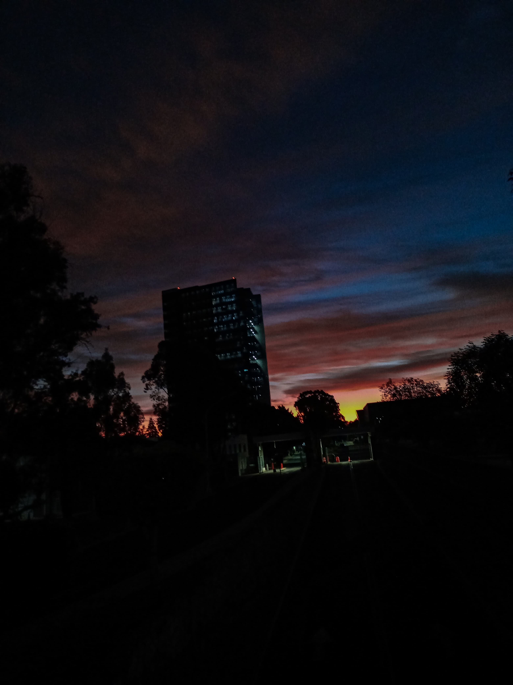
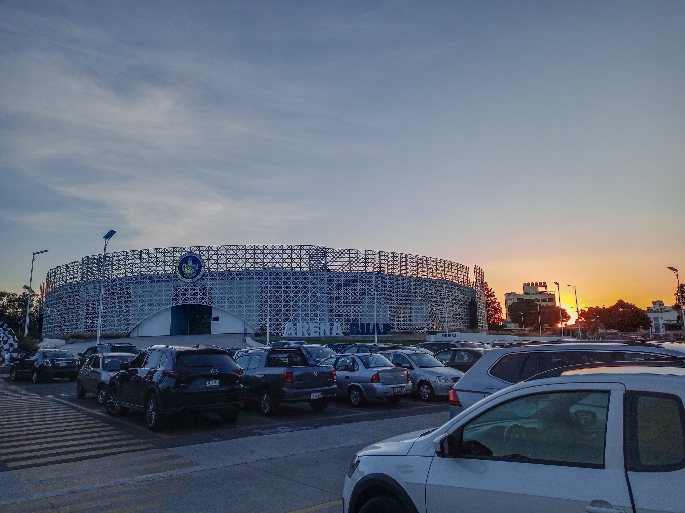
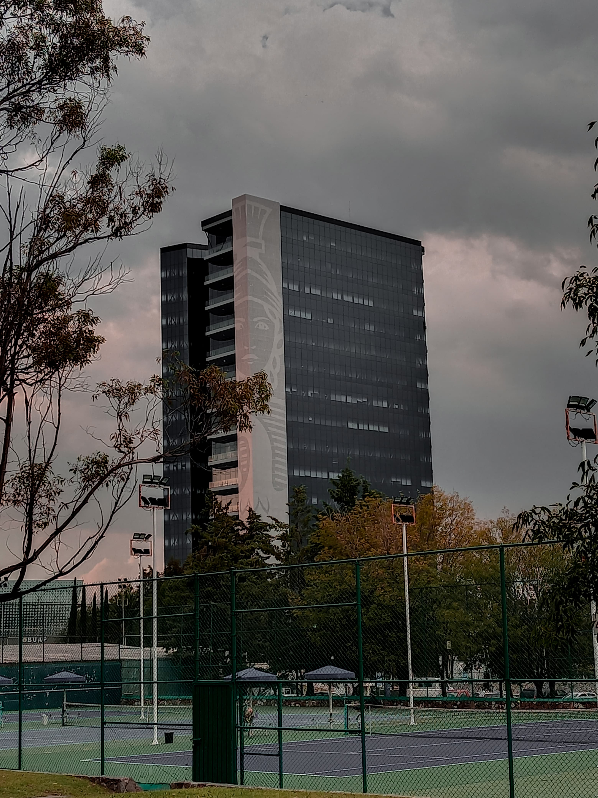
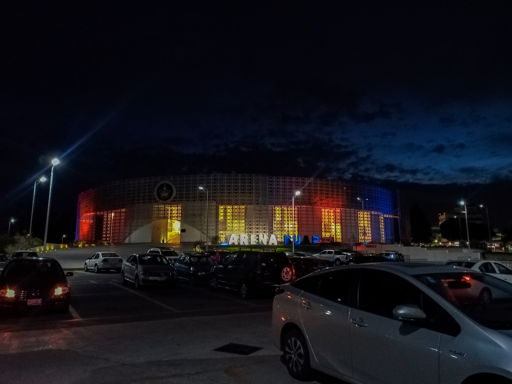
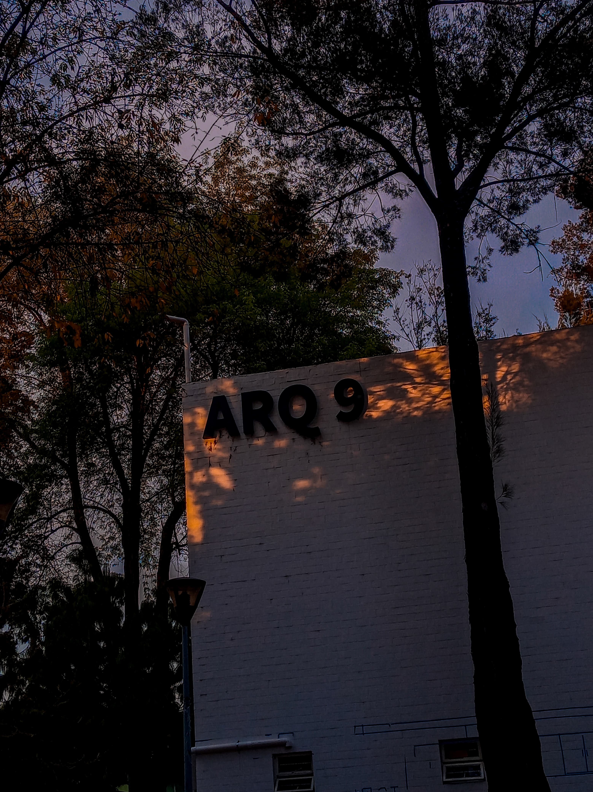
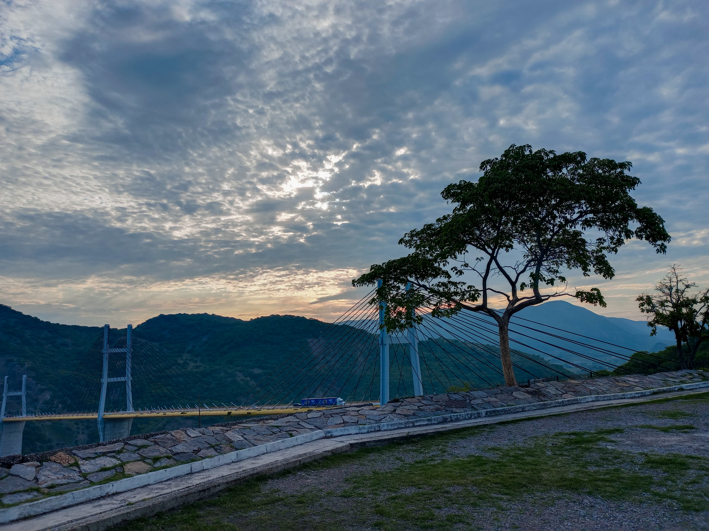
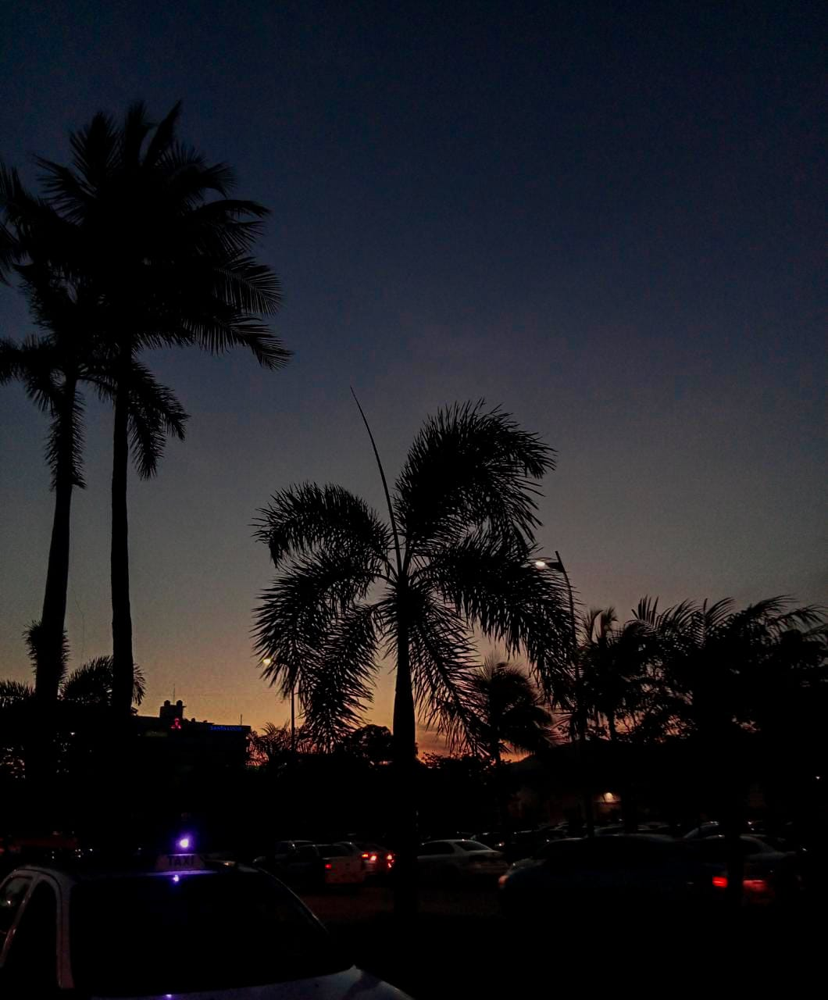
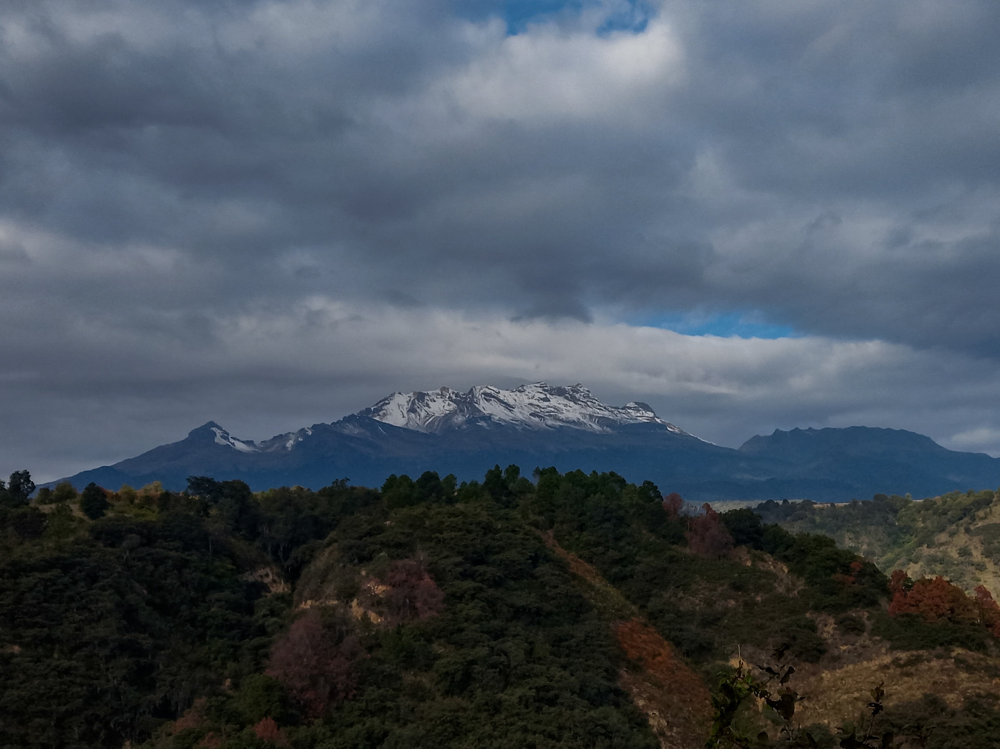
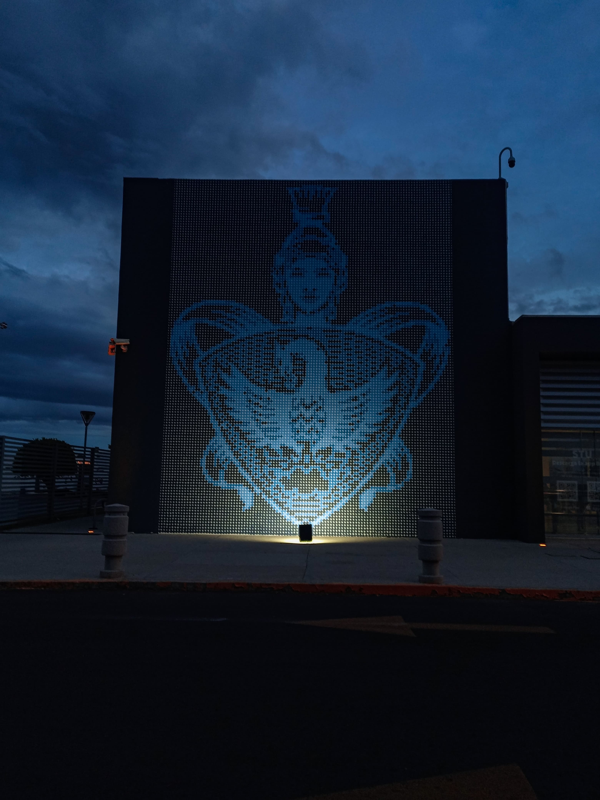

<style type="text/css">
@import url("../webfonts/BebasNeue_Regular/stylesheet.css");
@import url("../webfonts/BebasNeue_Regular/stylesheet.css");
@import url("../webfonts/BebasNeue_Regular/stylesheet.css");

.filter_sepia {
	filter: sepia(50%);
}
.filter_brillo {
	filter: brightness(130%);
}
.filter_sombra {
	filter: drop-shadow(5px 5px 3px gray);
}
body h1 {
	font-family: "BebasNeue Regular";
}
</style>
<link href="../css/style_page_galeria.css" rel="stylesheet" type="text/css">
<header>
	
<h1>GALERIA</h1>
	
 </header>
<nav> 
  <ul>
    
    <li><a href="../index.html">Inicio</a></li>
    <li><a href="galeria.html">Galeria</a></li>
	<li><a href="practicas.html">Practicas</a></li>
    <li><a href="contacto.html">Contacto</a></li>
  </ul>
</nav>
<main>
	<section>
	  <table width="100%" cellspacing="10" class="tabla_galeria">
	    <tbody>
	      <tr>
	        <td></td>
	        <td></td>
	        <td></td>
          </tr>
	      <tr>
	        <td></td>
	        <td></td>
	        <td></td>
          </tr>
	      <tr>
	        <td></td>
	        <td></td>
	        <td></td>
          </tr>
        </tbody>
      </table>
	
    </section>
</main>

<footer>
  <h6> Elaborado por Rojas Onofre Sandivel </h6>
</footer>
